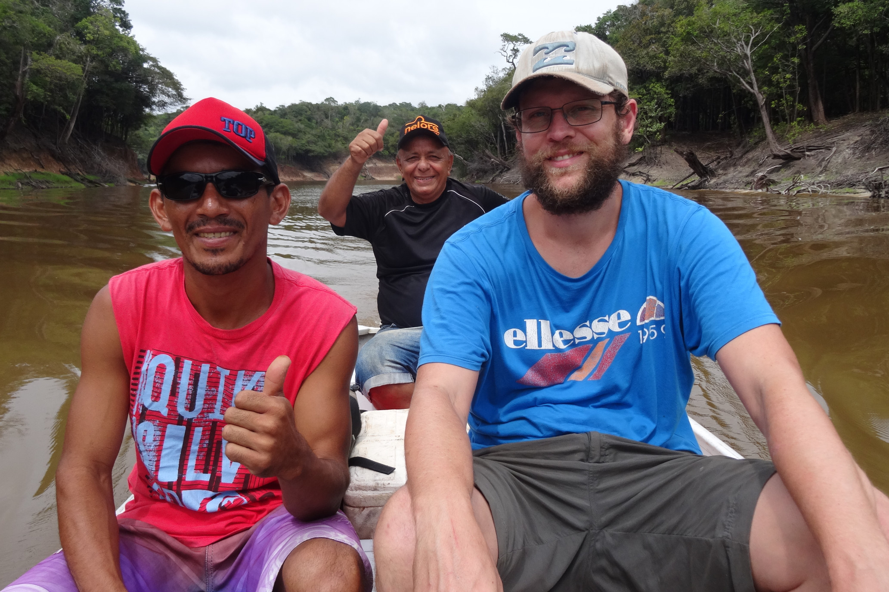

People
Dr. Neil Rosser
Assistant Professor, University of Miami
Associate of Entomology, MCZ, Harvard University
I did my undergraduate degree in Ecology at the University of East Anglia, with a year at the Université de la Méditerranée, in Marseille.
I then worked at the Instituto Nacional de Biodiversidad in Costa Rica, which led me to pursue research in neotropical biodiversity.
I did my Masters in Taxonomy and Biodiversity at Imperial College and the Natural History Museum in London, followed by a PhD at University College London with Jim Mallet.
Dr. Isla Duporge
Visiting Scholar
Isla Duporge is a zoologist focused on advancing remote sensing methods to better understand animal behaviour, working mainly on migratory species from wildebeest to monarchs.
She has been an Associate Research Fellow for the past three years at Princeton University and, prior to that, was at the University of Oxford.
Isla is currently a Visiting Scholar at the University of Miami, where we are collaborating to study butterfly migration and movement ecology.
Weston Gray
Ph.D Student
Weston graduated from the College of Wooster in 2019 with a B.A. in Biology and History, and having completed a thesis on the population dynamics of melanism in eastern grey squirrels.
He then worked as a Research Assistant at the University of Richmond, where he managed an NIH-funded project on rapid adaptation in the invasive African fig fly (Zaprionus indianus).
In 2025, Weston joined the University of Miami as a graduate student, where he is interested in studying hybrid zones to understand how anthropogenic change influences speciation.
Sophia Burghoffer
Undergraduate Researcher
Sophia is an undergraduate student majoring in biology at the University of Miami.
She is interested in ecology and evolution, and is currently researching the morphometrics of mimicry in Heliconius butterflies from Peru.
Grad Student Recruitment
I am currently recruiting grad students for 2026.
Research focus is open and flexible, but topics of potential interest include
speciation, evolution of aposematism and mimicry, plant-insect interactions, neotropical biogeography and genomics, genetics of hybrid sterility, invasive species biology,
tropical biodiversity and global change, appliation of artificial intelligence to taxonomy and systematics, among others.
Please feel free to get in touch, the deadline for applications is 1st December 2025.
Actualmente estoy reclutando estudiantes de posgrado para 2025.
El enfoque de investigación es abierto y flexible, pero los temas de interés potencial incluyen
especiación, la evolución del aposematismo y el mimetismo, interacciones planta-insecto, biogeografía neotropical y genómica,
genética de la esterilidad híbrida, biología de especies invasoras, biodiversidad tropical y cambio global,
aplicación de la inteligencia artificial a la taxonomía y sistemática, entre otros.
No dudes en ponerte en contacto, la fecha límite para las solicitudes es el 1 de diciembre de 2025.
The Entomology collections, INBio, Costa Rica.
Pongo del Caynarachi, San Martín, Peru.

Coroico, La Paz, Bolivia.
Above Yucumo, Beni, Bolivia.

Rio Tupana, Amazonas, Brazil.

Presidente Figueiredo, Amazonas, Brazil
The Entomology collections, INBio, Costa Rica.
Previous
Next